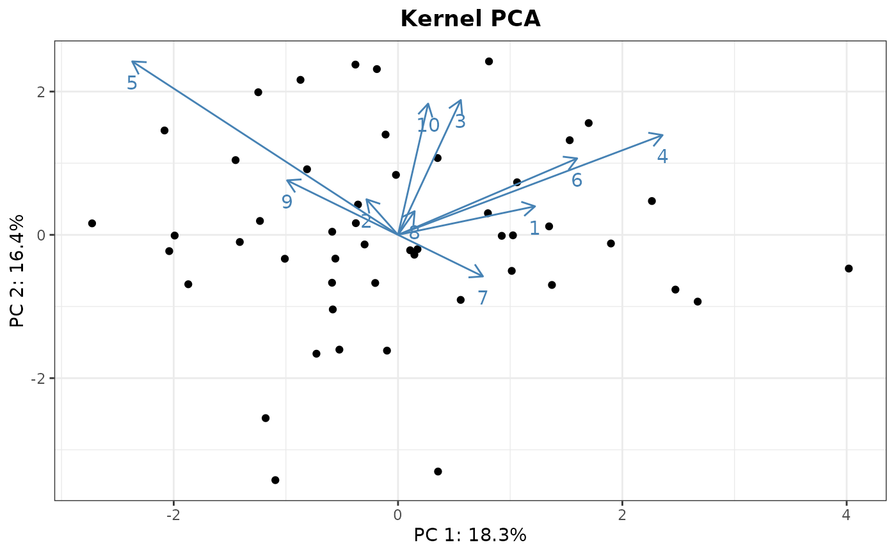

`kPCA_arrows()` draws arrows on a (kernel) PCA plot to represent the contribution of the original variables to the two displayed Principal Components (PCs).
Arguments
- plot
A kernel PCA plot generated by `kPCA()`.
- contributions
The variables contributions, for instance obtained via `kPCA_imp()`. It is not mandatory to draw all the original variables; a subset of interest can be passed on to this argument.
- colour
Color of arrows and labels. (Defaults: "steelblue").
- size
Size of the labels. (Defaults: 4).
- ...
Additional parameters passed on to geom_segments() and geom_text().
Details
It is important to note that the arrows are scaled to match the samples' projection plot. Thus, arrows' directions are correct, but do not expect that their magnitudes match the output of `kPCA_imp()` or other functions(`prcomp`, `princomp...`). (Nevertheless, they should at least be proportional to the real magnitudes.)
Examples
dat <- matrix(rnorm(500),ncol=10,nrow=50)
K <- Linear(dat)
## Computing the kernel PCA. The plot represents PC1 and PC2:
kpca <- kPCA(K,plot=1:2)
## Computing the contributions to all the PCS:
pcs <- kPCA_imp(dat,secure=FALSE)
#> Do not use this function if the PCA was created with the RBF,
#> Laplacian, Bray-Curtis, Jaccard/Ruzicka, or Kendall's tau kernels
## We will draw the arrows for PC1 and PC2.
contributions <- t(pcs$loadings[1:2,])
rownames(contributions) <- 1:10
kPCA_arrows(plot=kpca$plot,contributions=contributions)
